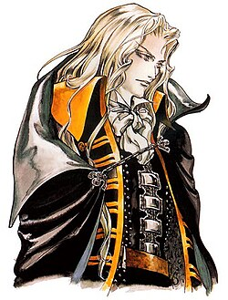
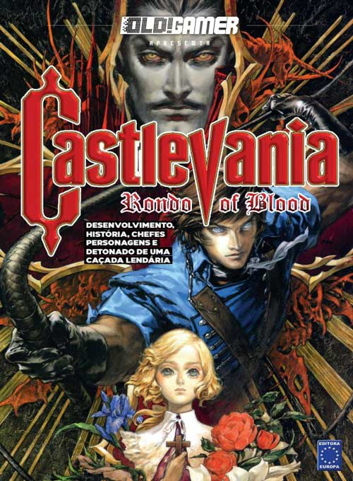

Alucard é um dos personagens mais icônicos da série Castlevania. Filho do conde Drácula e de uma humana chamada Lisa, ele luta contra o próprio pai para proteger a humanidade. Seu nome, "Alucard", é "Drácula" escrito ao contrário, simbolizando sua oposição ao mal.

poster de Castlevania.
tretagonisca agustula